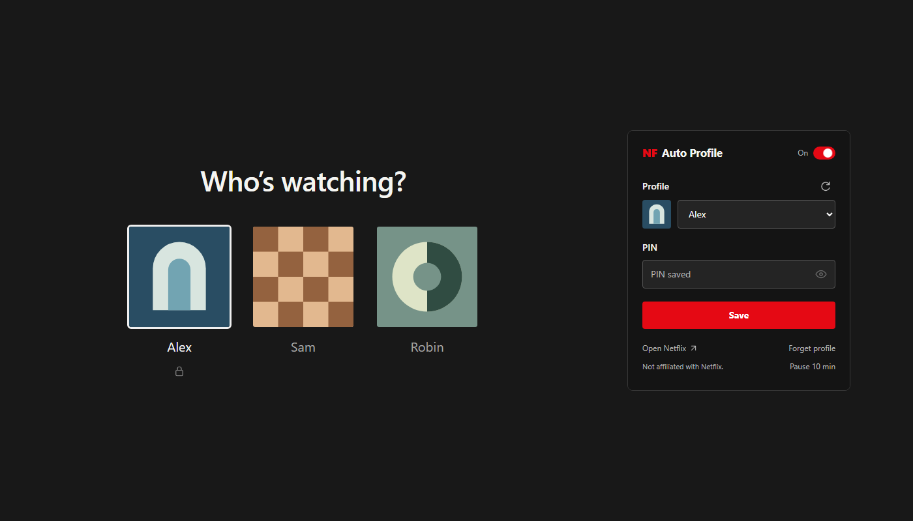

Your profile.
Already open.
Automatically opens your Netflix profile and enters its PIN.

Install
Manual installation
- Chromium browsers
-
Chrome, Edge, Brave, Opera, any Chromium browser.
- Download the Chromium ZIP and unzip it.
- Open your browser's extensions page and turn on Developer mode.
- Choose Load unpacked and select the unzipped folder.
- Firefox
-
Manual installs are removed when Firefox restarts.
- Download the Firefox ZIP. Do not unzip it.
- Open
about:debugging.#/runtime/ this-firefox - Click Load Temporary Add-on and select the downloaded ZIP file.